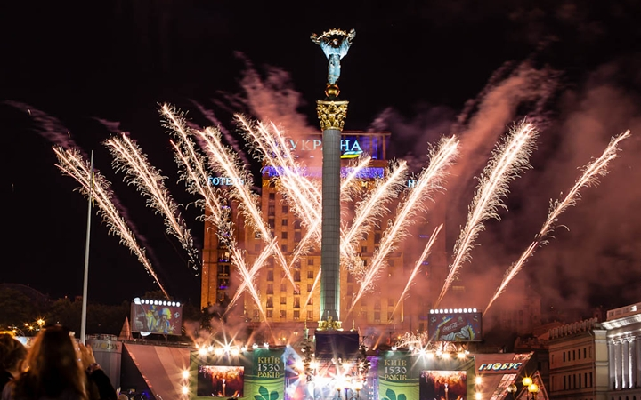

instagram
instagramБольшинство стран отмечает Новый год 1 января,
в первый день года по григорианскому календарю.
Новый год с учётом поясного времени начинается в Тихом океане,
первой его встречает Республика
Кирибати на островах Лайн (часовой пояс UTC+14).
Позже всех встречает Новый год население Американского Самоа,
островов Мидуэй и Ниуэ
(часовой пояс UTC−11) — в Кирибати на островах Лайн в это время
уже 2 января и 1 час после полуночи.
Некоторые страны отмечают Новый год по лунному календарю.
С 1-го января Новый год впервые отмечается в 153 году до н. э.,
поскольку с этого
дня вступали в должность римские консулы. В 46 году до н. э.
римский полководец и
верховный жрец Гай Юлий Цезарь ввёл свой новый календарь («юлианский»)
и окончательно
утвердил начало года с 1 января 45 года до н. э.
Именно при Цезаре под влиянием астрологии праздник Нового года
приобрёл самостоятельное
значение временной отметки начала года и, таким образом, положил
начало гражданскому году.